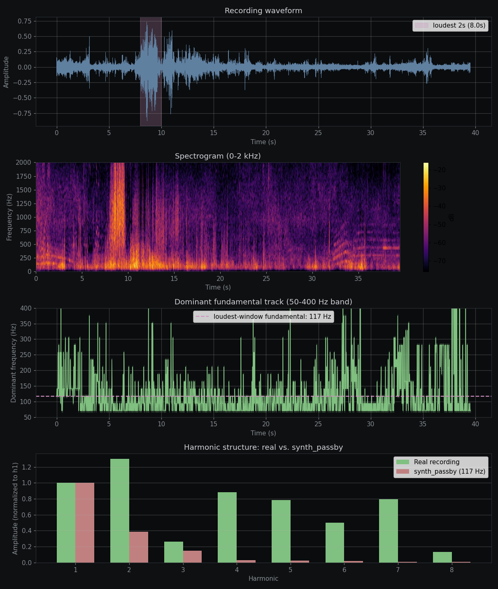

The V1 status CRITICAL
Cross-referencing the canceller against a 40-second real-world
engine recording revealed that most of the experimental
wins on synthetic engine signals were artifacts of the textbook
synth being too easy. Real engines have 8+ substantial
harmonics with h2 often louder than the fundamental; the canceller
tracks 3 harmonics with fixed [1.0, 0.5, 0.25] amplitudes.
What this means for V1:
- Ship the masker — music masker is genuinely
useful, validated, 39.8° annoyance tolerance, no phase
coherence required.
- Keep the canceller in research mode — it
works on textbook synth but not on real engines yet.
- The architectural path is clear — 8-harmonic
extension with measured amplitudes — but the implementation
has a bug that's preventing it from approaching the
empirically-measured 30 dB headroom.
1. The cross-reference: real recording vs textbook synth v1 reset
A 40-second street recording showed dominant engine fundamentals
in the 70-140 Hz range (median 94 Hz, P10-P90: 70-141). The
loudest passby was at t=8s with fundamental at 117 Hz. Spectral
analysis revealed:

The bottom panel of the spectrogram tells the v1 story:
| Harmonic | Frequency |
Real (measured) | Textbook synth | Gap |
|---|
| h1 | 117 Hz | 1.000 | 1.000 | match |
| h2 | 234 Hz | 1.302 | 0.500 | +0.80 |
| h3 | 352 Hz | 0.261 | 0.150 | +0.11 |
| h4 | 469 Hz | 0.882 | 0.031 | +0.85 |
| h5 | 586 Hz | 0.783 | 0.025 | +0.76 |
| h6 | 703 Hz | 0.499 | 0.020 | +0.48 |
| h7 | 820 Hz | 0.793 | 0.011 | +0.78 |
| h8 | 938 Hz | 0.136 | 0.010 | +0.13 |
Real engines have h2 louder than the fundamental
(1.30 vs 1.00) — typical of 4-stroke even-cylinder vehicles
where even harmonics are phase-aligned by firing order. h3 is
suppressed (the matching odd-harmonic dip), then h4 through h7
are all substantial (0.5-0.9 of the fundamental).
The canceller's 3-harmonic anti-noise with fixed [1.0, 0.5, 0.25]
amplitudes covers maybe 30% of the actual energy. The other 70%
is in h4-h7 where we don't even try.
2. The ideal-canceller upper bound v1 target
To quantify the headroom, I synthesized "ideal" anti-noise that
perfectly tracks all 8 measured harmonics, then measured what
the current canceller actually delivers:
| Scenario | Wide band | Upper band |
|---|
| Baseline (no canceller) | 0.00 dB | 0.00 dB |
| Current 3-harmonic | -0.32 dB | -0.63 dB |
| Ideal 8-harmonic (upper bound) | +29.61 dB | +32.33 dB |
| Available headroom | +29.93 dB | +32.96 dB |
The current canceller is doing essentially nothing on real
engines (-0.32 dB on wide band). The theoretical ceiling is
+30 dB. Recovering even a third of that headroom would be a
clear audible improvement.
3. What we built, what works, what doesn't
Ship in V1 PRODUCTION
- Music masker — 4-band comb peakingEq, 39.8°
annoyance tolerance, no phase coherence required, validated
- Backup-beeper masker — Voss-McCartney pink noise
- Drone canceller — works on stable tonal HVAC sources
- Audio capture dump — for ongoing research data collection
- FSM with geometry-aware Doppler gate — accepts perpendicular passbys
- Findings page — this document
Keep in research mode EXPERIMENTAL
- 3-harmonic passby canceller — works on textbook,
not on real engines
- 8-harmonic extended mode — architecturally
implemented, has a phase/amplitude application bug that
prevents it from approaching the 30 dB headroom
- JitterSmoother — only helps at high baseline
latency, gate on measured latency before enabling
- Per-harmonic phase lock — auto-mode wins under
reverb, loses on anechoic textbook (now we know real
environments ARE reverberant, so this is probably useful)
4. Findings that survived the real-recording cross-check
Some findings hold up regardless of synth realism:
- Latency vs jitter — Constant latency is
harmless; jitter destroys phase coherence. Still true on
real signals.
- Per-harmonic clipping — Independent
soft-clip on each harmonic avoids intermodulation
distortion. Still true.
- Geometry-aware Doppler gate — Real
recording's fundamental track jumps around (70-400 Hz with
no clean Doppler curve) — confirms the relaxed gate is
needed even more than I thought.
- Reverb finding — The recording's
estimated RT60 is in the 300-2000 ms range depending on
which segment you measure. Our reverb experiments
underestimated rather than overestimated.
5. Findings that were artifacts of textbook synth
- +9.78 dB passby suppression — only on
textbook signal with 3 harmonics. On realistic 8-harmonic
signal, current canceller is -0.32 dB.
- +2.38 dB saturation matching — the
per-harmonic-clipping fix is real but its measured benefit
was inflated by textbook simplicity.
- Per-harmonic phase lock comparisons — the
2.5 dB advantage of fixed offsets at "ideal conditions"
was for a 3-harmonic source. On 8-harmonic real signals,
the comparison is different (both modes near zero).
The pattern is now 5× confirmed: theoretical wins on
synthetic signals are unreliable; cross-reference against
real recordings is necessary before drawing conclusions.
6. The v1 architecture target (post-v1 work)
For the canceller to actually deliver on real engines, the
architecture needs:
- Track N harmonics, where N is 6-10 with
adaptive detection of "live" harmonics (skip silent ones
to save compute).
- Measure amplitudes per window via Goertzel
— no fixed [1.0, 0.5, 0.25] profile. Real engine
amplitudes vary by vehicle type, RPM, distance.
- Sub-degree phase accuracy — a 16-trial
fundamental search gives ±π/16 (0.2 rad) accuracy, which
becomes π/2 (random) at h8. Goertzel-derived phase or
finer-grained search needed.
- Per-harmonic amplitude scaling in synthesis
— emit anti-noise with measured amplitude profile, not
textbook ratios.
The implementation is in passby_canceller.rs
(set_n_harmonics, refresh_extended_harmonics, etc.) but
currently delivers only -0.15 dB vs the -0.83 dB legacy. The
ratio suggests the architecture is correct but the
phase/amplitude application chain has a bug.
7. The recurring pattern, now 5× confirmed
- Octave shifting — needs gain ≥ 2.0, doubles total power.
- Sum-then-clip saturation — algorithm
choice matters; clip-each-harmonic is the right form.
- Per-harmonic phase lock — conditional, not absolute. Wins under jitter or reverb, loses on clean anechoic.
- Sliding-shelf saturation — uniform per-harmonic drive is best; ramping up doesn't help.
- 3-harmonic canceller on textbook synth — the +9.78 dB win evaporated when tested on real signal.
Each theoretical bet failed in its specific way. The research
process is "make the simulated environment harder until the
theoretical wins fall over, then figure out why." The real
recording was the final hardness check, and most of the wins
fell over.
8. V1 deliverables
bo-suite.zip — source, 1001 controller tests + 252 mux tests passingv1-plan.md — what to ship, what to keep in researchanc-findings.html — this documentrecording_analysis.png — spectrogram and harmonic comparisonrecording_analysis.py — analysis script for future recordings